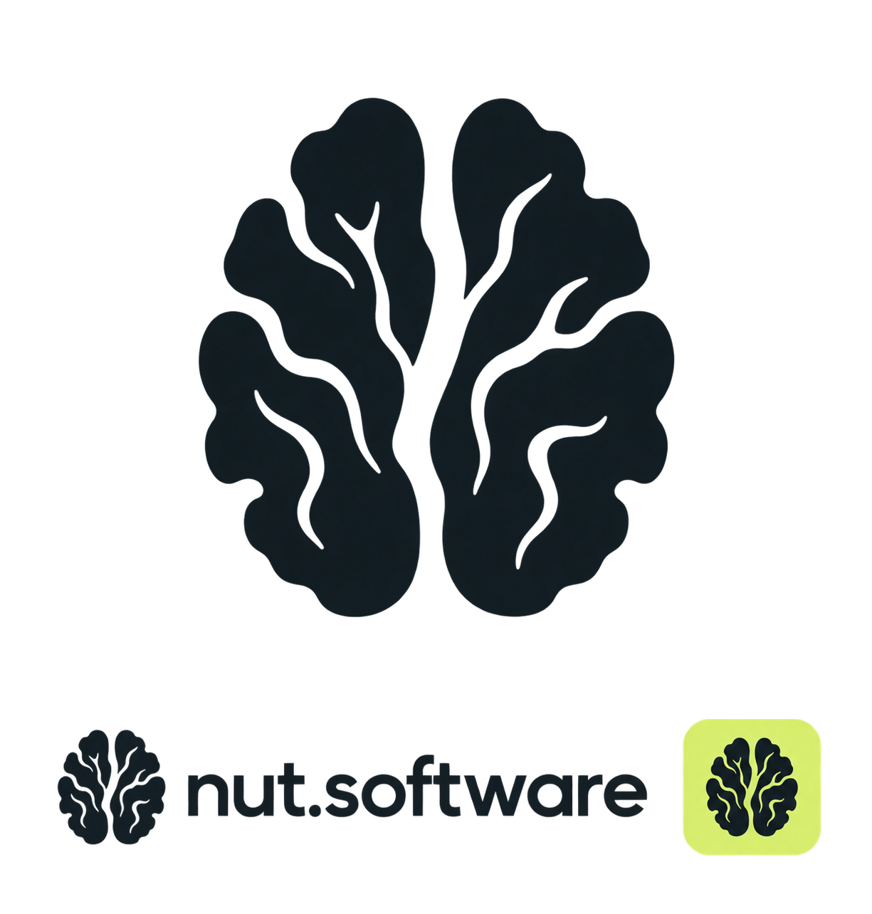
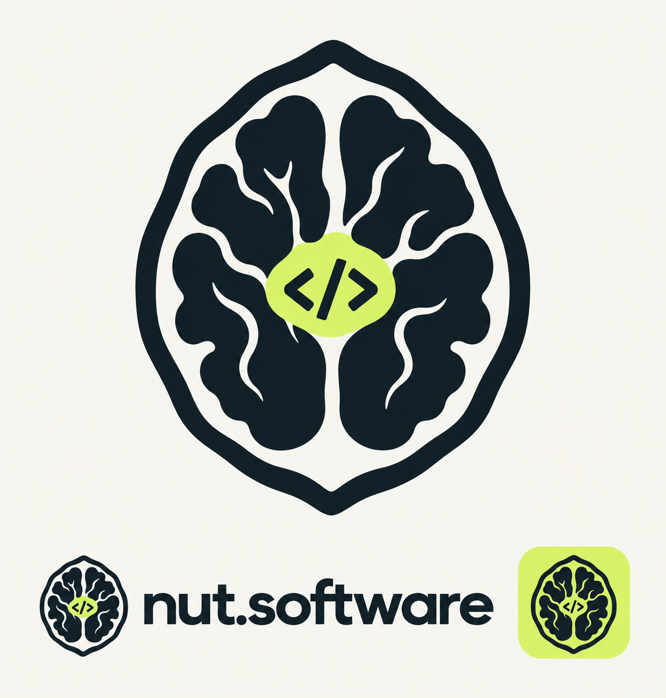
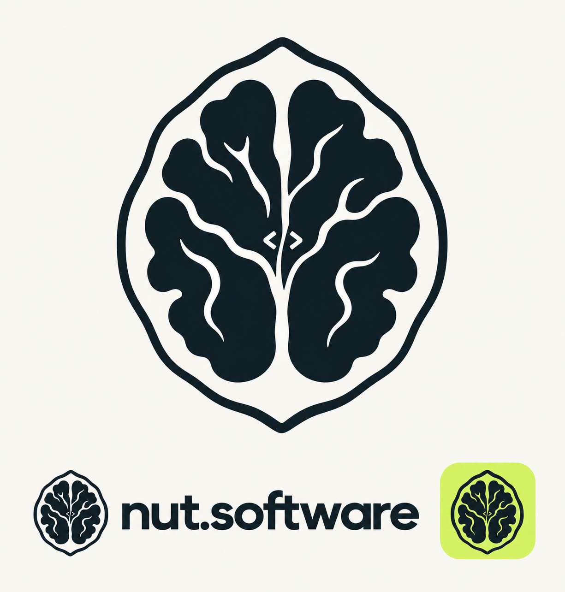

Orzech bez skorupki
Pierwszy zaakceptowany kierunek rysunku orzecha.
Pobierz oryginał PNGNut Software · 23 września 2026 · kolejne etapy projektu

Pierwszy zaakceptowany kierunek rysunku orzecha.
Pobierz oryginał PNG
Duży tag z mocnym akcentem koloru; oceniony jako zbyt dominujący.
Pobierz oryginał PNG
Wariant wskazany do użycia przed dalszym porównywaniem projektów.
Pobierz oryginał PNGPóźniejszy wariant z dużym tagiem; baza sześciu wersji technologicznych.
Pobierz oryginał PNG